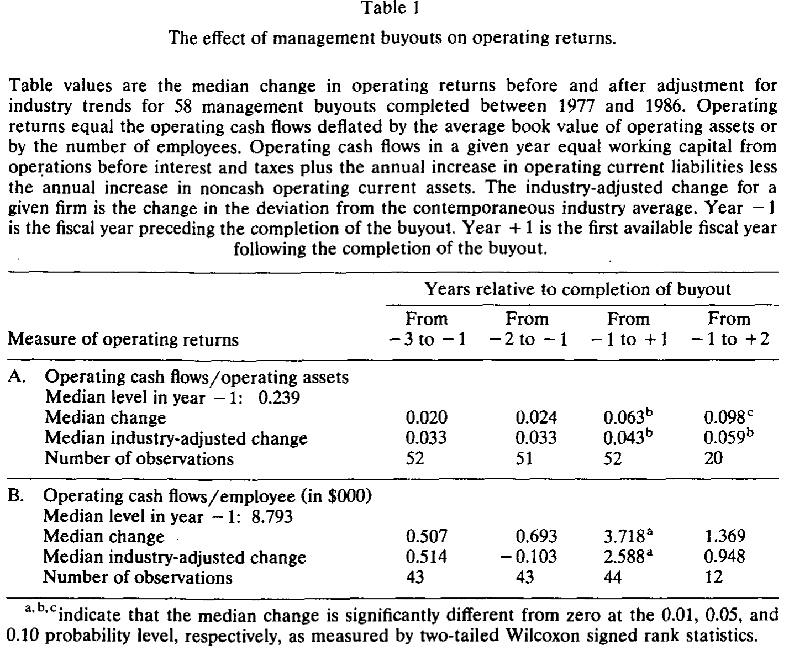
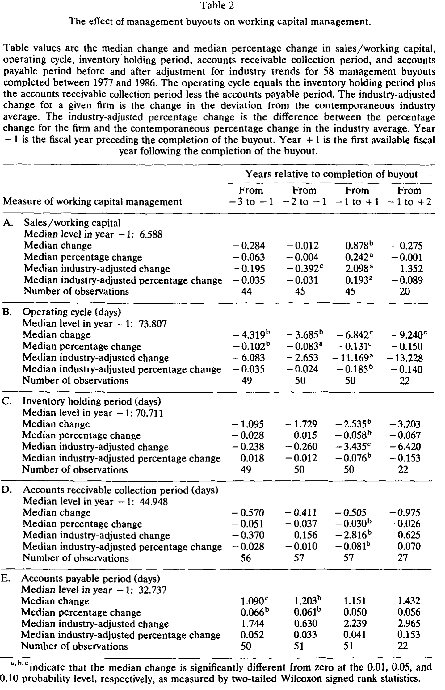
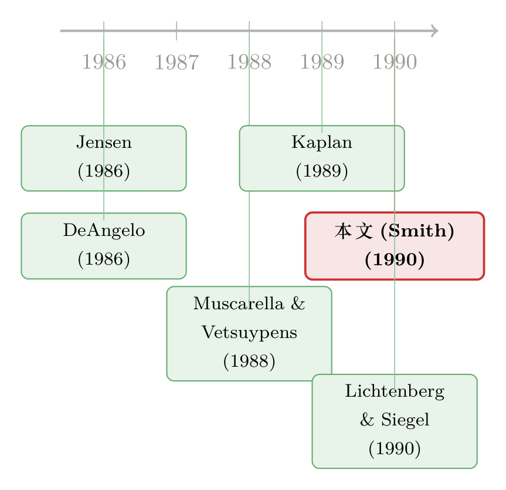

买断之后，效率从哪儿来？——58 家公司换了主人之后的现金流
本文读的是 Smith (1990, Journal of Financial Economics)：管理层买断（MBO）之后，公司的经营回报显著上升——以「每名员工」和「每元经营资产」产生的经营现金流衡量，从买断前一年到买断后一年都明显提高；而这份提升既不是裁员裁出来的，也不是砍研发、砍广告、砍维修砍出来的，主要来自营运资本管理的收紧。换句话说，是同一批人、同一批设备，把同一门生意做得更「紧」了。
1 一个让人不舒服的问题
八十年代的美国，杠杆买断（leveraged buyout, LBO）是华尔街最喧嚣、也最招骂的一桩生意。一群人——通常包括公司的高级管理层——借来一大笔以公司资产和现金流作抵押的钱，把公开市场上的股票统统买回来，把上市公司变回私人公司。批评者的画面很直观：这帮人借了天量的债，为了还本付息，必然要把公司「榨干」——裁员、砍研发、停维修、卖厂房，吃掉公司的长期竞争力，换取眼前几年的现金。
可拥护者的画面同样清晰，而且来头不小。Jensen（1986）那篇著名的《自由现金流的代理成本》提出了一个反直觉的命题：债，可能是一种纪律。当一家公司账上趴着大把「自由现金流」（free cash flow），经理人有花不完的钱去盖楼、去并购、去消费在职特权，股东却拿他没办法；而把债务杠杆加上去之后，未来的现金流被「锁死」在还本付息上，经理人想乱花也没得花了。买断同时还做了另一件事：让管理层从「拿工资的代理人」变成「真金白银的股东」。（关于自由现金流这条主线，可参见《现金为什么一定要「还」出去？——四十年后，重读 Jensen 的自由现金流》与《现金多的公司去并购，市场为什么先扣分？》。）
于是两种叙事针锋相对：买断到底是毁灭价值的掠夺，还是释放效率的纪律？这正是 Smith 想回答的问题。而她回答的方式，恰恰避开了所有人都盯着的那个地方——股价。
2 为什么不看股价，要看现金流账本
首先，一个自然的问题是：买断创不创造价值，市场早就用收购溢价投了票，何必再费力去翻账本？
问题在于，溢价只告诉你「市场预期会有好处」，却不告诉你这个好处从哪儿来。是真的把生意做好了？还是把工人的退休金、债权人的优先权、政府的税款重新切了一刀，换了个口袋？要回答这个，你必须钻进公司买断前后的经营数据里，一年一年地对账。
但这里有个棘手的会计陷阱。MBO 完成时，公司的厂房、存货、商誉通常要按收购价「写高」（writeup）账面价值，随后折旧、销货成本、摊销统统跟着上涨，报告利润被人为压低。如果你用「营业利润 / 总资产」这种应计制的盈利率去衡量，会得到一个荒谬的结论：买断后业绩反而变差了。事实上，作者就指出，如果照搬 Ravenscraft and Scherer（1987）用的「营业利润 / 总资产」，她的样本在买断后第一年（year +1）的行业调整值，比买断前五年的任何一年都低——而这纯粹是资产写高在分子分母上各砍一刀的会计假象。
所以真正关键的一步在于：用现金流，而不是用利润。Smith 的核心业绩指标是「经营资产回报率」（return on operating assets），定义为：
$$ \text{return on operating assets} = \frac{\text{operating cash flows}}{\text{operating assets}} $$
其中经营现金流是「正常经营带来的现金及有价证券净增加」，剔除利息收入、股利收入、卖厂房的损益、非经常项目，也不扣利息费用和股利。分母是当年期初与期末经营资产的平均账面值，并对买断后的写高做了还原。现金流的好处是：它不受资产写高影响，也不受买断前后会计方法变更的干扰。
她还配了第二把尺子——「每名员工的经营现金流」（operating cash flows per employee）。这把尺子更钝，却更不怕会计花招：再怎么改折旧政策，也改不了「这家公司一共有多少人、一共产生了多少经营现金」这个比值。两把尺子量出同一个方向，结论才站得住。
3 样本：58 家公司，和它们换了主人的那几年
Smith 从三个来源凑出 230 家成功的 MBO，层层筛掉数据不可得的，最后留下 58 家于 1977–1986 年间完成买断的公司——其中近一半集中在 1984–1985 年。这些不是小作坊：买断前五年，销售额和有形资产的中位数分别是 $370 百万和 $184 百万。
买断这件事在数据上留下了两道深深的指纹。一是杠杆：债务 / 有形资产账面值的中位数，从买断前的 0.59 一跃到买断后的 1.01，四分之三的样本买断后这个比率超过 0.83。二是所有权集中：高管、外部董事、其他大股东（持股 5% 以上者）三者合计持股，从买断前的中位数 35.5% 飙到买断后的 超过 95%。拆开看，最戏剧性的变化发生在「其他大股东」身上——从 9.3% 涨到 49.1%；而高管自己的持股从 11.5% 升到 16.7%。这正对应了 Jensen 故事里的两根杠杆：经理人持股上升，提高了他偷懒和挥霍的成本；外部大股东集中，则带来了更紧的监督。
作者还把 58 家公司按是否发生「重大资产出售」分成两组（以买断后卖掉的厂房设备是否超过 year −1 的 20% 为界），共 30 家进入「资产出售组」。这个划分后面会派上大用场——它要回答的是：业绩提升会不会只是「卖掉了亏损业务」的结果？
4 主要结果：回报上去了，而且不是靠裁员
接着是全文的核心。表 1 报告了买断前后经营回报的中位数变化。
经营资产回报率在 year −1 的中位数是 0.239。从 year −1 到 year +1，中位数上升 0.063（0.05 水平显著）；做行业调整后，上升 0.043（同样 0.05 显著）。也就是说，这份提升不是「整个行业都在变好」蹭来的。更重要的是反例：买断前的变化（从 year −3 到 −1、从 −2 到 −1）都不显著——回报不是早就在往上爬、买断只是顺水推舟，而是买断之后才拐头向上。从 year −1 到 year +2 的中位数变化为 0.098（0.10 显著），行业调整后 0.059（0.05 显著），暗示这份提升能维持住，而不是昙花一现。

Table 1
每名员工的现金流讲了一个更响亮的故事。Year −1 的中位数是 $8,793；到 year +1，中位数增加 $3,718，相当于在原基础上涨了 42%（0.01 显著）。做行业调整后，增加 $2,588，相对于行业调整后 $3,631 的基数，涨幅高达 71%。
但真正让这个结果有说服力的，是它没有伴随什么。如果回报上升是裁员裁出来的，我们该看到员工人数大跌——可没有：全样本和资产出售组的员工人数变化都不显著，非出售组反而增加了中位数 313 人（0.10 显著）。如果是砍研发、砍广告、砍维修「透支未来」换来的，我们该看到这些支出大幅缩水——可在数据可得的范围内，这些项目都没有显著削减。资本支出（capital expenditure）确实作为销售额的百分比下降了，但作者特别强调：资本支出是非经营性的现金用途，砍它不会抬高经营现金流，因此它不可能是回报上升的来源。
那么，效率到底从哪儿来？
5 反转：答案藏在「营运资本」里
于是反转出现了。把回报拆开来看，提升的主要来源不是什么宏大的战略重组，而是一件相当「接地气」的事——营运资本（working capital）管理的收紧。
表 2 给出了证据。「销售额 / 营运资本」这个周转效率指标，从 year −1 到 year +1 的中位数百分比变化是 +24.2%（0.01 显著），而买断前的变化都不显著；行业调整后仍上升 19.3%（0.01 显著）。「经营周期」（operating cycle，即从付钱给供应商到从客户那里收回现金之间的天数）从 year −1 的中位数 74 天缩短了约一周；行业调整后缩短 11 天，相当于 18.5% 的降幅（0.01 显著）。

Table 2
再往下拆，经营周期的缩短来自两头：存货持有期下降约 6%（0.05 显著），应收账款回收期在行业调整后下降约 8%（0.05 显著）。而应付账款期几乎没变——也就是说，他们加快了收钱、压低了库存，却没有靠拖欠供应商来粉饰。这是一幅非常具体的「把生意做紧」的图景：同样的厂、同样的人、同样的产品，只是把压在存货和应收账款里的现金抠了出来。
这恰恰回应了一开始的张力。批评者担心的「砍长期投资换短期现金」并没有发生；真正发生的，是那种教科书会说「本该早就做、却一直没人去做」的营运资本优化——而它之所以现在才做，按 Jensen 的逻辑，正是因为所有权结构和债务约束变了，经理人终于有了去做的动力。
6 那会不会是「内部信息」而非「激励」？
读到这里，一个挑剔的读者会立刻反问：回报上升，未必是激励改善的结果——会不会是管理层早就知道未来现金流要变好，趁着外部股东还不知道，低价把公司买下来？这是一个对识别极其致命的替代解释：如果成立，那买断后的「业绩提升」根本不是买断造成的，而是管理层用私有信息择时的产物。
作者用两个观察来反驳。其一，对于那些失败的买断提案——因董事会或股东否决、撤回、或被更高的外部报价截胡而告吹的——现金流在事后并没有像成功买断那样上升。如果管理层真握有「未来会变好」的私密信息，这些公司本该照样变好才对。其二，对于那些由外部人发起、或事先存在收购威胁的买断（这些情形下，很难说是管理层在用自己的私有信息择时），买断后的现金流上升幅度和其他买断一样大。两条证据都把「私有信息」这个故事的可信度削弱了。
7 文献脉络
把这篇论文放回它所在的那条线索里，会看得更清楚。
源头是 Jensen（1986）。他提出自由现金流的代理成本，并大胆暗示：像 LBO 那样大幅加债，可能是提升公司效率的有效手段。这是一个理论命题，等着被数据检验。

紧接着是一批想给这个命题「找证据」的实证工作。DeAngelo（1986）从另一个角度切入——她检验管理层会不会在买断前操纵应计项目、压低报告利润以压低收购价，结论是没有支持这种操纵的证据（这一点反过来给 Smith 用现金流而非利润的做法提供了背书）。Kaplan（1989a）则用一批 MBO 样本，记录了买断后经营业绩和价值的提升，是这条线上最直接的先行者；Smith 这篇与之并肩，但把焦点钉在现金流口径与业绩来源的分解上——到底是裁员、砍投资，还是营运资本？她给出的答案是后者。和她同卷的 Lichtenberg and Siegel（1990）则用工厂层面的全要素生产率数据，独立地确认了 LBO 之后生产率确有提升（详见《杠杆买断之后，工厂里到底发生了什么？》）。Muscarella and Vetsuypens（1988）研究「反向 LBO」（重新上市的买断公司），从另一个侧面印证了组织结构与效率的关系。
往后看，这条线继续生长：买断的代价究竟由谁承担、能维持多久，催生了一批后续研究（可参见《杠杆买断那 42% 的溢价，到底是谁掏的钱？》与《LBO 到底是「速战速决」还是「从此私有」？》）；而「用债务和集中所有权去重塑一家公司」这个母题，则在像 Sealed Air 那样的临床案例里被反复演绎（《九倍的债，没人逼，他偏要借》）。
8 评论与延伸（Q&A + 研究方向）
(a) 几个可能的疑问
Q：为什么坚持用现金流，而不是大家更熟悉的利润率？
因为 MBO 完成时资产要按收购价写高，随后折旧、销货成本、摊销全部抬升，报告利润被机械地压低。用「营业利润 / 总资产」会得出「买断后变差」的假象（作者样本里行业调整值确实比买断前五年都低）。现金流不受写高影响，「每名员工现金流」连会计政策变更都绕开了——这是全篇识别能成立的会计基础。
Q：业绩提升会不会只是「卖掉了亏损业务」？
作者把样本按是否发生重大资产出售分成两组（30 家 vs 28 家）。两组的经营回报提升幅度相近，说明回报上升不是单靠剥离差业务实现的。这是排除「资产出售驱动」这一替代解释的关键设计。
Q：会不会是裁员、砍研发砍出来的短期现金？
数据说不是。员工人数在全样本和资产出售组都无显著变化，非出售组甚至增加；研发、广告、维修支出在可得范围内都没有显著削减。资本支出虽降，但它是非经营性现金用途，砍它不抬高经营现金流，逻辑上无法解释回报上升。
Q：那「管理层用私有信息择时」这个故事呢？
两条反证：失败的买断提案事后现金流不上升；外部人发起或有收购威胁的买断（难以归因于管理层私有信息）现金流上升幅度照样大。两点都削弱了私有信息解释。但要注意，这是间接证据，并非铁证。
Q：这是因果识别吗，还是只是「买断前后对比」？
严格说，它是一个前后对照 + 行业调整 + 失败样本对照的设计，不是现代意义上带外生冲击的自然实验。买断本身是内生选择的——是这些公司「被选中」去买断的。行业调整剔除了同行业共同趋势，买断前变化不显著则排除了「既有上升趋势」，但「哪类公司会被买断」这层选择问题，论文无法完全关掉。
Q：样本只有 58 家、且 year +2 只剩 12–20 个观测，结论可靠吗？
这是真实的局限。year +2 的「维持性」证据来自很小的子样本，作者自己也提醒不要把 year +2 和 year +1 直接比较。好在 year +1 的核心结果在多种检验下稳健（脚注里提到参数检验、t 检验给出的双尾 p 值大多在 0.02–0.08 之间），且两把独立尺子方向一致，主结论比单看样本量显得更稳。
(b) 几个可能的研究问题与提案
1. 买断后的债权人，是受益者还是买单者？
【经济故事】Smith 证明了经营层面的「饼」确实变大了，但买断也把杠杆从 0.59 推到 1.01。一个自然的问题是：这块变大的经营现金流，在股东、老债权人、新债权人之间是如何分配的？老债权人的求偿权是否在高杠杆下被稀释？ 【可行性】中。需要把样本公司买断前已发行的公开债与买断时新发的债逐笔配对，观察债券价格 / 利差在买断公告前后的反应。数据上对老债券的二级市场报价要求较高，但对有公开债的子样本可行；识别可借助同一发行人不同优先级债券的相对价格变化。
2. 把「营运资本收紧」搬到信用市场来看流动性。
【经济故事】本文最硬的机制是营运资本管理收紧（存货降、应收账款回收加快）。如果一家公司系统性压缩营运资本、把现金抠出来还债，它的短期信用风险和债券二级市场流动性会怎么变？营运资本是经营性流动性的缓冲，抠得太干会不会让公司在冲击下更脆弱？ 【可行性】中。需要把公司层面的营运资本指标（存货周转、应收/应付天数）与其公司债的流动性度量（如成交价差、零成交天数）匹配。现代样本（有 TRACE 数据）比 1990 年的样本好做得多；识别可用行业内的营运资本冲击或供应链事件做工具。
3. 不同类型的所有者集中，效率改善是否不同？
【经济故事】本文里「其他大股东」持股从 9.3% 涨到 49.1%，是所有权集中里最大的一块。但「PE 基金大股东」与「管理层自持」带来的监督性质截然不同。哪一种所有者结构带来的营运资本改善更大、更持久？ 【可行性】高。需要逐笔手工整理买断后的所有权明细（代理声明、招股书），区分财务投资者与经营层持股；用买断后业绩对所有权结构成分做横截面回归。数据可得，识别需小心所有权与公司质量的内生性。
4. 外资买断 vs 本土买断：跨国所有权下的效率提升。
【经济故事】本文是纯美国样本。当买断的发起方是外国投资者时，监督距离更远、信息更不对称，营运资本式的「精细化运营」改善还能复制吗？这能把「外资持有人是不是更差的监督者」这个老争论接到买断文献上。 【可行性】中。需要构造跨境买断样本并匹配经营现金流数据，跨国会计口径的可比性是主要障碍；可优先用同时在多国披露财报的子样本，识别上借助「发起方国籍」作为监督强度的代理。
9 我的判断
这篇论文的贡献，我认为有三层，且一层比一层硬。
第一层是测量方法的纠偏：在所有人盯着利润率、并被资产写高带偏的年代，Smith 坚持用现金流口径，避开了一个足以让结论翻盘的会计陷阱。光这一点，就值得后来所有研究买断业绩的人记住。
第二层是机制的分解：她没有止步于「买断后业绩变好」这个粗结论，而是把这份改善逐一拆给你看——不是裁员、不是砍研发、不是砍维修，而是营运资本的收紧。这种「证明它不是什么」的工作，往往比「证明它是什么」更费力，也更有说服力。
第三层是对替代解释的正面回应：用失败样本和外部发起样本去堵「私有信息择时」的口子，体现了一种难得的实证自觉。
但识别上的担忧也要诚实地讲。买断是内生选择的——是这些公司被选中（或自我选择）去买断的，前后对比无法完全排除「会被买断的公司本就处在某种拐点上」。行业调整和买断前趋势检验缓解了这一点，却没有根除它。样本小（58 家）、且维持性证据所依赖的 year +2 子样本只有十来个观测，让「长期可持续」这个结论比「短期提升」要弱得多。
我接下来最想看到的，是把这套现金流口径搬到一个带外生冲击的现代设定里——比如利用税法或监管变化造成的买断成本外生变动，去识别同一套「营运资本→现金流」的机制；以及把视线从股东挪到债权人和供应链，看看这块变大的饼，到底有多少是新创造的，又有多少只是从别人口袋里挪过来的。毕竟，效率提升是真的——但谁付了账，这篇论文还没说完。
参考文献
DeAngelo, L. (1986). Accounting numbers as market valuation substitutes: A study of management buyouts of public stockholders. The Accounting Review 61, 400–420.
Jensen, M. (1986). Agency costs of free cash flow, corporate finance, and takeovers. American Economic Review 76(2), 323–329.
Kaplan, S. (1989a). The effects of management buyouts on operating performance and value. Journal of Financial Economics 24(2), 581–618.
Kaplan, S. (1989b). Campeau's acquisition of Federated: Value destroyed or added? Journal of Financial Economics 25(2), 191–212.
Lichtenberg, F., & Siegel, D. (1990). The effects of leveraged buyouts on productivity and related aspects of firm behavior. Journal of Financial Economics 27(1), 165–194.
Marais, L., Schipper, K., & Smith, A. (1989). Wealth effects of going private for senior securities. Journal of Financial Economics 23(1), 155–191.
Muscarella, C., & Vetsuypens, M. (1988). Efficiency and organizational structure: A study of reverse LBOs. Working paper, Southern Methodist University.
Ravenscraft, D., & Scherer, F. M. (1987). Life after takeover. Journal of Industrial Economics 36(2), 147–156.
Smith, A. J. (1990). Corporate ownership structure and performance: The case of management buyouts. Journal of Financial Economics 27(1), 143–164.